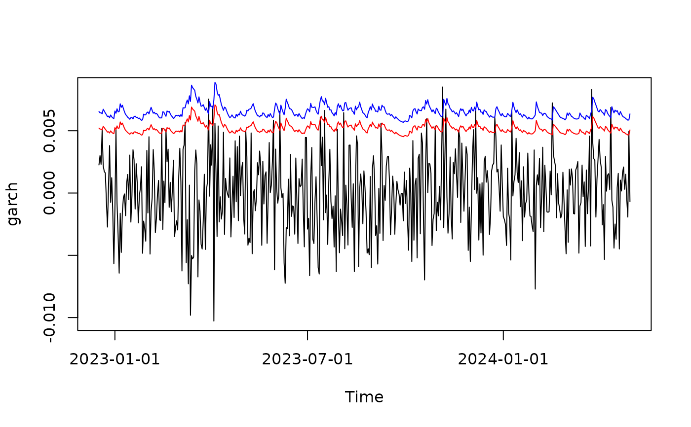
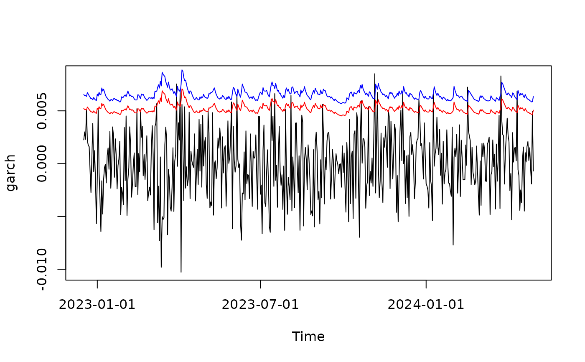

Compute Value-at-Risk (VaR) and expected shortfall (ES)
VaR.RdCompute Value-at-Risk (VaR) and Expected Shortfall (ES) for a fitted GARCH-APARCH model.
Usage
# S3 method for fGARCH
VaR(dist, p_loss = 0.05, ..., tol)
# S3 method for fGARCH
ES(dist, p_loss = 0.05, ...)Arguments
- dist
an object from class
"fGARCH", obtained fromgarchFit().- p_loss
level, default is 0.05.
- ...
not used.
- tol
tollerance
Note
We use the traditional definition of VaR as the negated lower
quantile. For example, if \(X\) are returns on an asset,
VAR\({}_\alpha\) = \(-q_\alpha\), where
\(q_\alpha\) is the lower \(\alpha\) quantile of \(X\).
Equivalently, VAR\({}_\alpha\) is equal to the lower
\(1-\alpha\) quantile of \(-X\) (the loss series). For
details see the vignette in package cvar availalble at
https://cran.r-project.org/package=cvar/vignettes/Guide_cvar.pdf
(or by calling vignette("Guide_cvar", package = "cvar")).
If you wish to overlay the VaR or ES over returns, just negate the VaR/ES, see the examples.
Examples
## simulate a time series of returns
x <- garchSim( garchSpec(), n = 500)
class(x)
#> [1] "timeSeries"
#> attr(,"package")
#> [1] "timeSeries"
## fit a GARCH model
fit <- garchFit(~ garch(1, 1), data = x, trace = FALSE)
head(VaR(fit))
#> 2022-12-17 2022-12-18 2022-12-19 2022-12-20 2022-12-21 2022-12-22
#> 0.005215774 0.005132384 0.005135318 0.005073563 0.005363526 0.005243880
head(ES(fit))
#> 2022-12-17 2022-12-18 2022-12-19 2022-12-20 2022-12-21 2022-12-22
#> 0.006544763 0.006440189 0.006443868 0.006366425 0.006730050 0.006580009
## use plot method for fitted GARCH models
plot(fit, which = 14) # VaR
 plot(fit, which = 15) # ES
plot(fit, which = 15) # ES
 plot(fit, which = 16) # VaR & ES
plot(fit, which = 16) # VaR & ES
 ## plot(fit) # choose the plot interactively
## diy plots
## overlay VaR and ES over returns
## here x is from class 'timeSeries', so we convert VaR/ES to timeSeries
## don't forget to negate the result of VaR()/ES(),
plot(x)
lines(timeSeries(-VaR(fit)), col = "red")
lines(timeSeries(-ES(fit)), col = "blue")
## alternatively, plot losses (rather than returns) and don't negate VaR()/ES()
plot(-x)
lines(timeSeries(VaR(fit)), col = "red")
lines(timeSeries(ES(fit)), col = "blue")

## plot(fit) # choose the plot interactively
## diy plots
## overlay VaR and ES over returns
## here x is from class 'timeSeries', so we convert VaR/ES to timeSeries
## don't forget to negate the result of VaR()/ES(),
plot(x)
lines(timeSeries(-VaR(fit)), col = "red")
lines(timeSeries(-ES(fit)), col = "blue")
## alternatively, plot losses (rather than returns) and don't negate VaR()/ES()
plot(-x)
lines(timeSeries(VaR(fit)), col = "red")
lines(timeSeries(ES(fit)), col = "blue")
